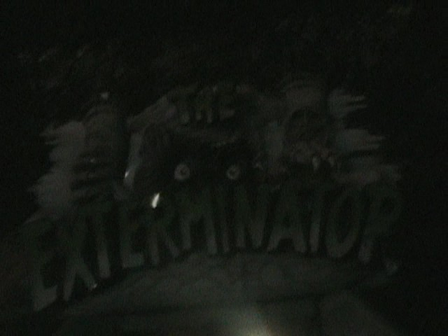

| |
Exterminator Review

We're here at Kennywood, where we're going to be reviewing their spinning coaster. Exterminator. Now this is pretty unique as far as Spinning Coasters go. Not by the layout. But rather, just by the theming. The ride itself is just a standard Spinning Mouse inside a box. However, the theming is actually really cool. It's basically themed to being bugs who are being exterminated by the exterminator. Ooh. That's actually....pretty clever as far as theming goes. But....how does it hold up? Does the theming make this a much better ride experience than the vast majority of other Spinning Mice? Well, let's hop in the cars and find out. Roll through a turn in the dark before we begin climbing the lifthill. All you can see is a series of red lights, along with an alarm sound and a voice telling all humans to evacuate as they exterminate the place. But of course, we foolishly don't leave. Probably because we know that deep down, we're all just pests. =) We then go through some switchbacks. We notice some exterminators spraying something on us, and yelling at us. Hey! We may be pests, but you should still be nice to us! =( We continue to go through the standard switchbacks. Despite being in the dark, we've ridden so many clones of this that we know EXACTLY what's going on. We then pass a sign that says "BOILER ROOM". Crap! Now the ride is going to boil us. Nope. But we do head down a small drop, which is a lot of fun. We then head down the big drop. It's nothing special. Just a standard Spinning Mouse drop. But it's still fun, even in the dark. We then pass on by the exterminator, asking for some help exterminating us. OH NO!!! INCREDIBLECOASTERS IS GETTING GENOCIDED!!! =( A voice tell us to shut it down. OH thank god. They're going to stop. Right? Nope. Now comes the spinning part of the ride. And....in some good news, this version of a spinning mouse actually spins a decent amount. The theming, for as much as I'm having fun playing along, is pretty minimal and crappy. But just as far as sheer raw spinning goes, this is one of the stronger Spinning Mouse coasters. We then go through a turn before going through the final dip and bump. Clunky, but hey. We're still spinning a little bit. We then head up and rise into the brake run. Honestly, while I love the concept of the theming, the effects were....not running that well when I rode it. So that was a real bummer. It pretty much was just a Spinning Mouse in a box. However, it's at least a good Spinning Mouse in a box that spins a decent amount. With that said, I would ONLY recommend riding it if you need the credit, or if it's not a busy day. Because this ride GETS LONG LINES!!! And while it's a decent Spinning Mouse, you should NOT wait longer for this than all the other coasters in the park.
6/10
Location: Kennywood
Opened: 1999
Built by: Reverchon
Last Ridden: June 23, 2021
I have ridden this exact same ride at the following parks.
Farup Sommerland
Walt Disney World Resort
Yokohama Cosmoworld
Exterminator Photos


Home
|